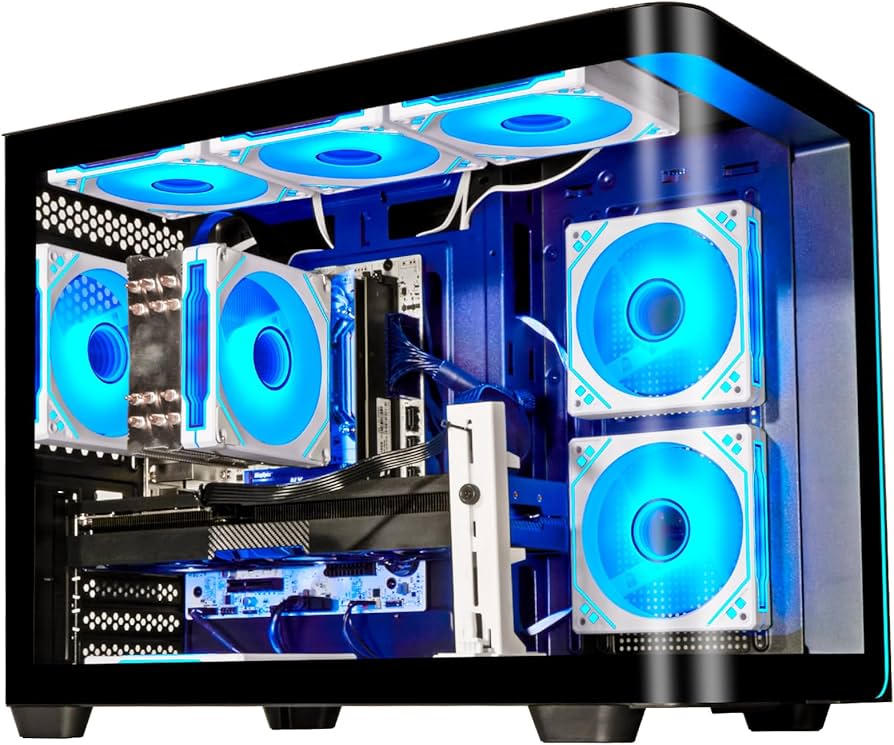
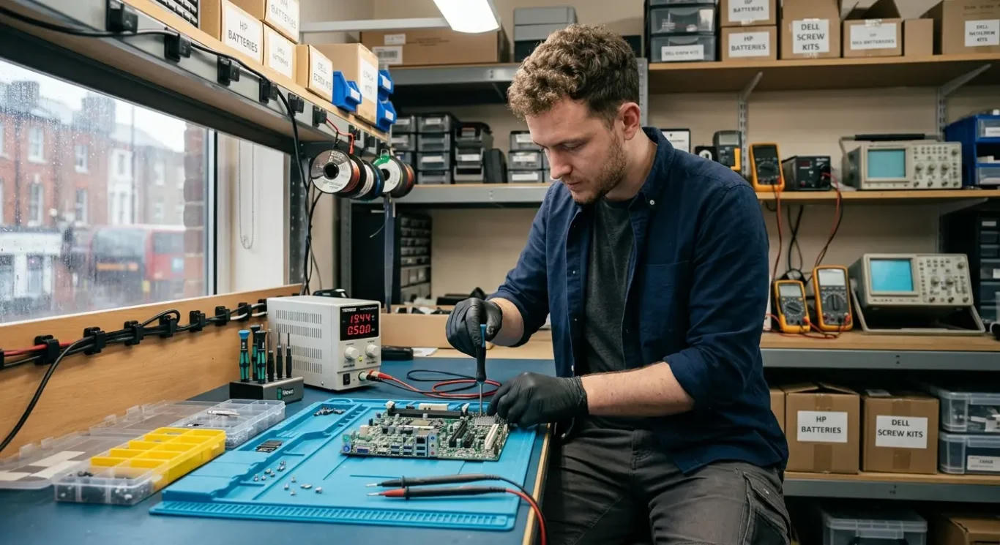
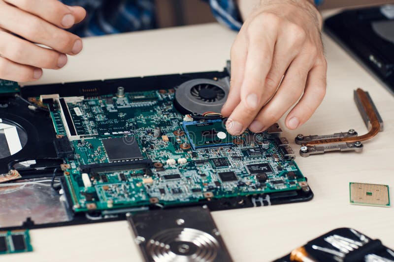

Tecnowil
Reparación de PCs y Notebooks en Corrientes
Soy Wilmer Materano. En mi taller diagnosticamos, reparamos y dejamos tu equipo listo para usar. Hardware, software, virus, pantallas, discos y armado de PCs.
Av. Teniente Ibáñez 1445, Corrientes. Atendemos de lunes a viernes de 9 a 18 hs.
Pedí presupuesto
¿Qué hacemos?
Diagnóstico
Revisamos el problema y te explicamos las opciones claras antes de reparar.
Reparación de hardware
Pantallas, teclados, baterías, placas, fuentes y cambio de disco SSD.
Software y virus
Limpieza de virus, instalación de Windows, optimización y recuperación de datos.
Nuestro taller

